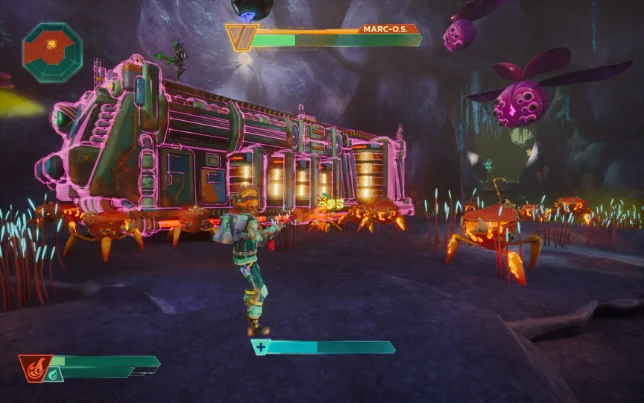
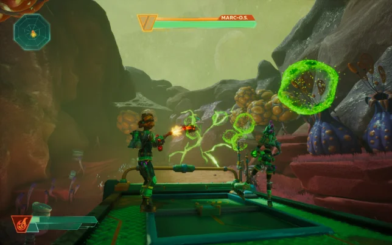
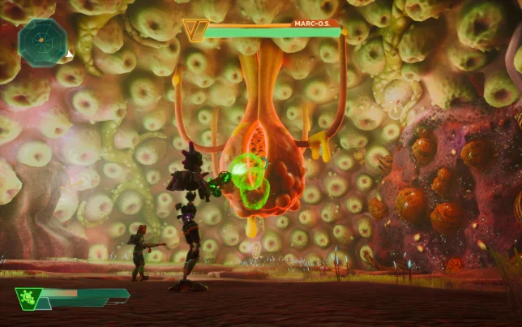

Bugs N' Guns is a cooperative third person shooter. Player will need to combine their weapons firepower to eliminate enemies and obstacles as players try to protect a train called MARC - OS from hostile flora and fauna.



Vision & Production: Established the game's foundational vision and directed end-to-end production from Alpha to Beta, managing a cross-functional team of 16 artists, programmers, and designers.
Systems & Mechanics: Conceptualized, prototyped, and implemented core gameplay systems, including the four distinct elemental weapons and dynamic enemy AI behaviors.
Holistic Design: Owned the comprehensive design pipeline, driving gameplay loops, level architecture, and narrative design to ensure a cohesive player experience.
For Bugs n Guns, our in-office pipeline was built around structured communication, rigorous milestone tracking, and maintaining a single source of truth. To protect the team's focus and prevent scope creep, I established a clear departmental hierarchy.
Each team kicked off the day with a localized morning sync to align on actionable tasks via Trello, while all overarching systems and specifications were strictly documented in our central Notion Game Design Document (GDD). To ensure macro-alignment without derailing individual contributors, I met directly with the area leads weekly.
We managed our overall production timeline through monthly sprint reviews against our Gantt charts, complemented by end-of-week progress check-ins. To maintain a unified vision across the studio, I also instituted bi-daily full-team playtests, guaranteeing that everyone consistently experienced the latest builds and understood exactly how their daily tasks integrated into the final product.